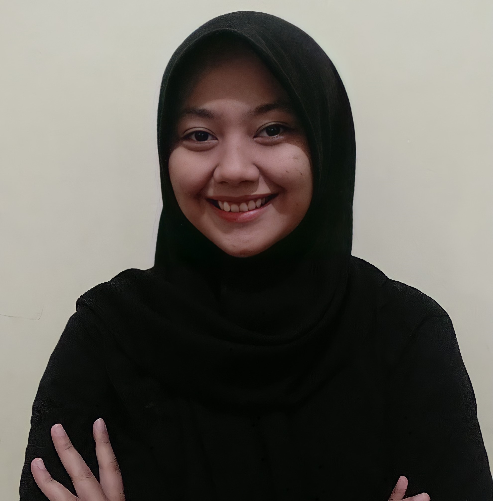

|
Hi, I am a Mathematics student of Surabaya State University. I have been interest in data and analytics. I am someone who is fast learn in team, creative, competent, and hard worker. I also active in organization, training, and event. Many of my experience is in the field of academic and create a selfdevelopment event.I am easy to learn and understand about new things that i am interested Academic History
Personal Skills
Get in Contact✆ 081246800373 ✉ nurifathriya.19036@mhs.unesa.ac.id Achievement
|
 |